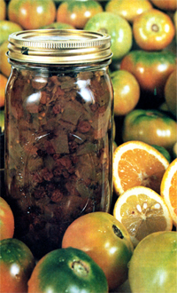

Perhaps Ruth Hampton's venison mincemeat recipe in MOTHER NO. 24 ("It's a Mincemeat Day") did appeal to you . . . but you'd rather not kill animals to eat. Or maybe you've got a gardenful of tomatoes but not many red ones and it's threatening to frost any night now. Either way, you may want to prepare a wonderful delicacy that our predecessors were known to enjoy: "mincemeat" made from green tomatoes.
After all, it's use 'em or lose 'em, right? And golden fried tomatoes or garlicky pickled ones, yummy though they can be, still aren't the only good uses to which a surplus of green 'maters can be put. Why, you've got the makin's of enough moist, spicy vegetarian mincemeat there in front of you to go into pies, pastries, and cookies all winter long!
So why not pick a peck of that unripe fruit-about eight quarts of love apples (as folks once called them)-and then chop the tomatoes as fine or as coarse as you like. Some people put the main ingredient through a food mill, but I like biggish chunks. Whichever, simmer your 'maters in a large canning kettle with a little water. Then, as the chunks or bits become soft, add:
salt to taste
1 pound of raisins
1 pound of currants (or a second pound of raisins)
1 cup of apple cider vinegar 2 oranges, chopped up peels and all
1 lemon, also chopped or ground whole
1 cinnamon stick a few whole cloves
1 cup of molasses more water, if needed
Bring the combined ingredients to a boil (by which time they should all be soft), ladle the mixture into hot, sterilized jars, and screw on sterile lids.
Congratulations! You now have seven or eight quarts of fine mincemeat put up for the coming cold weather! And on some nottoo-distant day, when snow's blowing by outside the kitchen window, you can break out one of those quart bottles and bake yourself a sublime pie.
When you first unseal the preserves for a taste, you'll find that your tomato mincemeat isn't very sweet. (1 purposely leave it acid, so it can be canned without pressure.) So now sweeten the pie filling (or cookie filling, or whatever) to taste, with molasses (my choice), honey, or raw sugar . . . and thicken it with a little cornstarch (only a little, blended
into a thin paste with some of the mincemeat liquid, then stirred into the entire containerful. Otherwise, the filling-more fluid than the store-bought kind-will be too wet.)
Green tomato mincemeat makes a great basic material for culinary experiments. Right now the air in my house is laden with the fragrance of a mincemeat coffeecake that I made from a whole wheat bread recipe: rolled out, spread with last fall's thickened filling, rolled up, and popped into the oven. What a treat! And the experimental possibilities go on and on . . . for as long as those quart jars last, that is!
|
 |
|
|